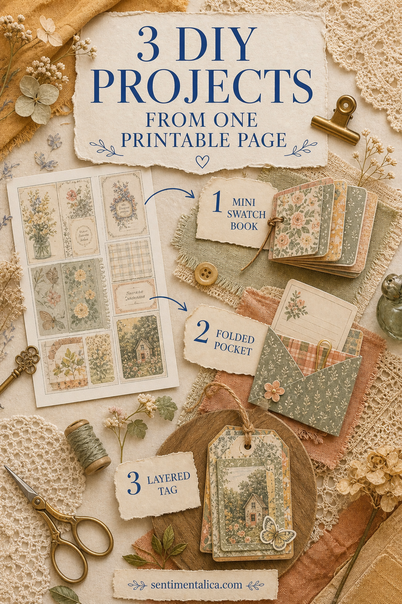
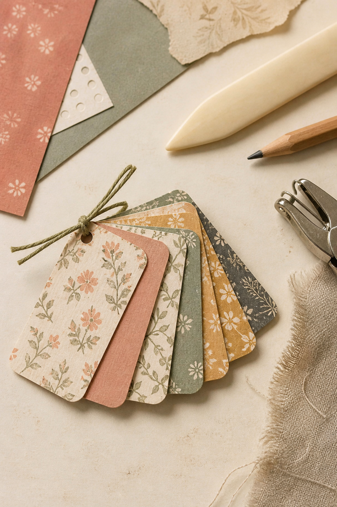
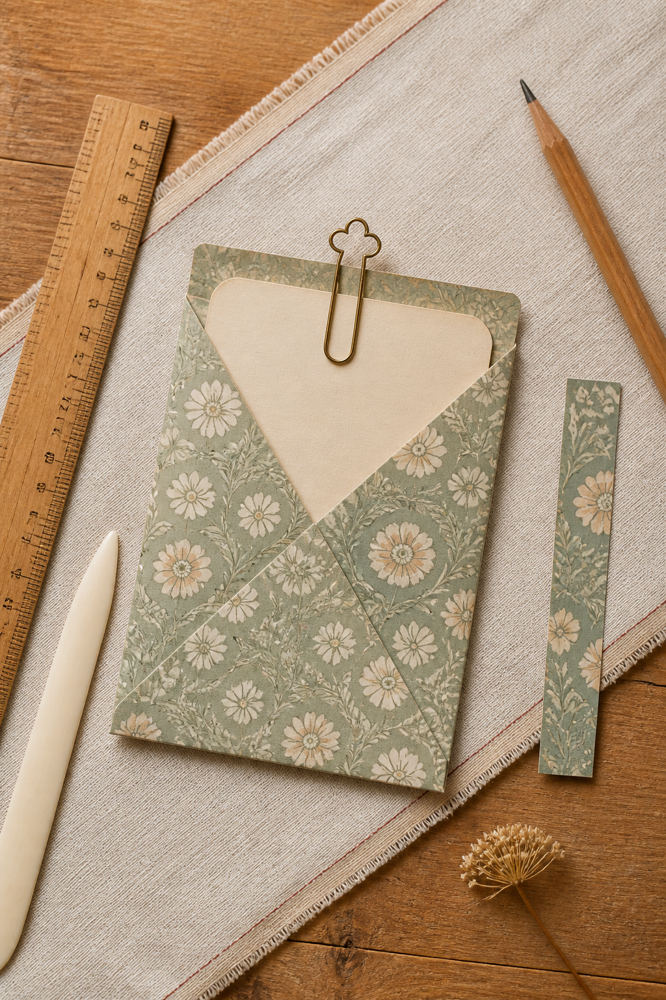
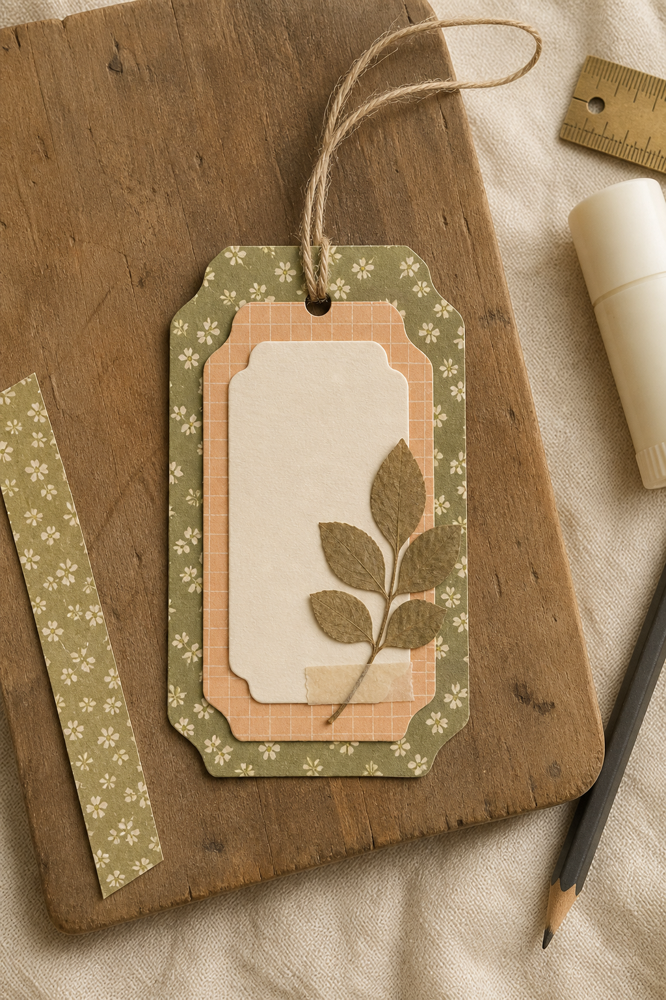
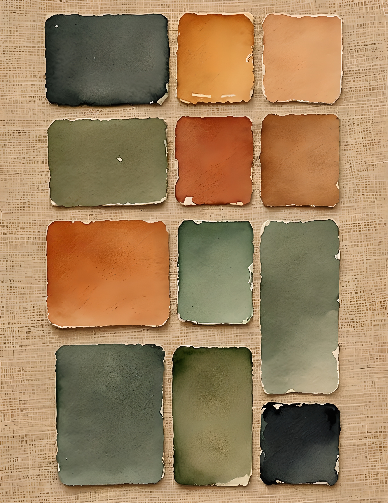
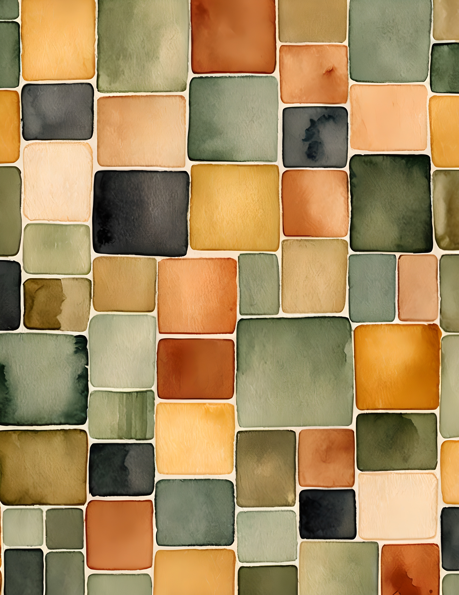
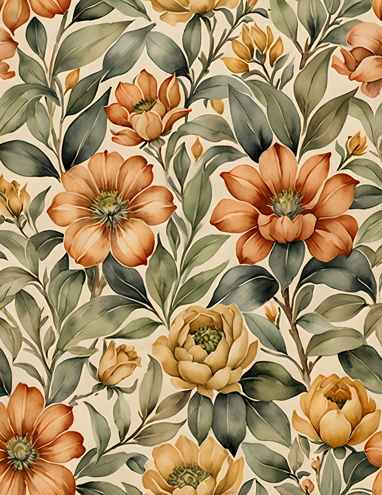

A beautiful printable page can be strangely difficult to cut. You like the whole composition, so you wait for a project important enough to deserve it. This simple exercise removes that pressure: make a working copy, choose one page, and turn it into three useful paper pieces in a single sitting.
You do not need special equipment. A printer, scissors, ruler, pencil, glue, one hole punch, and a little thread are enough. Print on matte paper around 120 to 180 gsm if your printer accepts it. Lighter paper folds easily; heavier paper makes sturdier tags.

Before you cut: make a tiny plan
Look for three kinds of area on the page: a detailed focal section, a quieter section, and one strong border or color change. Reserve the focal section for the tag, the quiet area for the pocket, and small leftover strips for the swatch booklet. Pencil the shapes on the back before cutting. This keeps the best detail from disappearing into a fold.
Project 1: a mini swatch booklet
Cut six to eight small rectangles from the quieter parts of the page and from any coordinating scraps you already have. A finished size around 3 by 7 cm is easy to handle. Stack the pieces, round the corners if you like, then punch one hole near the top. Tie them with thread, narrow ribbon, or a small metal ring.
Use the booklet as a portable palette reference. Add a paint dab, ink sample, paper name, or short color note to the back of each piece. It can also become a tiny place for favorite words or one-line memories.

Project 2: a folded pocket
Cut a rectangle from the quietest section. Fold the two long sides inward by about 1 cm, then fold the bottom upward to create a pocket. Trim away the tiny overlapping corners before gluing so the base stays flat. If the print is busy, place a plain cream card inside it. The contrast makes both the pocket and the writing easier to see.
Glue the pocket to a journal page, gift tag, scrapbook layout, or the inside of a handmade card. It is useful for a note, receipt, photograph, seed packet, or one small piece you do not want to attach permanently.

Project 3: a layered tag
Cut the strongest floral, frame, or book detail into a tag shape. Add two slightly larger layers behind it using plain paper or offcuts. Shift each layer a few millimetres so the edges remain visible. Punch the top, add thread, and leave a quiet patch on the back for a date or message.
The tag works as a bookmark, gift tie, journal tuck-in, or decorative label. Stop before every surface is covered. One focal image, two supporting layers, and one tactile detail are usually enough.

Use the leftovers, too
Keep narrow strips for page tabs, tiny labels, and collage bridges. Punch circles from awkward corners. Tear very small fragments into a jar for later color matching. The point is not to force every millimetre into this project. It is to discover that a page can become more useful after you stop protecting it.
Try it first with free floral pictures
If cutting still feels risky, begin with the 100 free floral pictures from Sentimentalica. Print one image twice. Keep one copy untouched and use the other for the three projects. Knowing that you can print it again makes it much easier to experiment with scale, folds, and imperfect edges.
A coordinated page set for the next round
The same method works with any printable art you already own. If you want a coordinated collection for more small projects, the Swatch Book printable set combines watercolor color studies, botanical frames, and old-book details. These are genuine pages from the collection:



Choose one page, set a 30-minute timer, and make the first cut before you can overthink it. For more practical paper projects and journal ideas, browse the Sentimentalica journal.